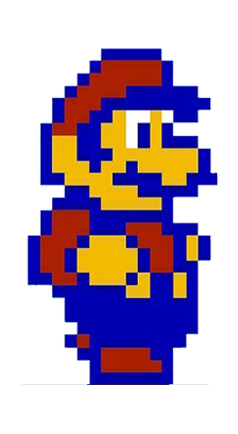
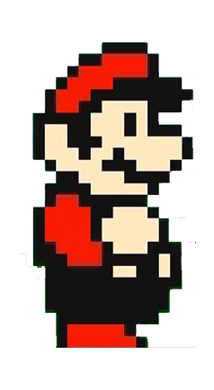
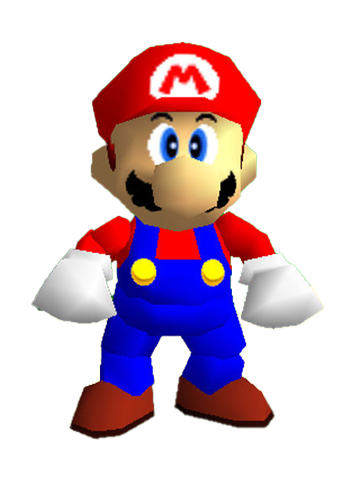

Mario 1985
×Mario in 1985 consisted of a heavily pixalated 8-bit character. This was due to the graphic quality avalaible at the time.
SCORE: 0
1985


Mario in 1985 consisted of a heavily pixalated 8-bit character. This was due to the graphic quality avalaible at the time.
1988

Mario in 1988 was an improvement on the previous version,showing more detail such as in the general shape but also in the face.
1990

Mario in 1990 improved on the colours but still remained heavily pixalated. Also showing slightly less details than the previous version from 1988.
1991
Mario from 1991 significantly improved on the details compared to previous versions while maintaining the pixalated look. The biggest improvement in details can be seen in the added shadows and depth.
1996

Mario from 1996 went from 2D to 3D. This was an massive step towards the Mario we all know and love today, with more details and added shadows.
2002
In 2002 we finally got to meet the Mario we all know and love today, the graphics and details massivly improved due to the improvement of technologies.
2006
In 2006 Mario became slightly smoother in shading but no real big transformations would happen up until years later.
2023
In 2023, with the release of The Super Mario Bros. Movie, we got to see a much more realistic and improved Mario containing even more details and better shading.